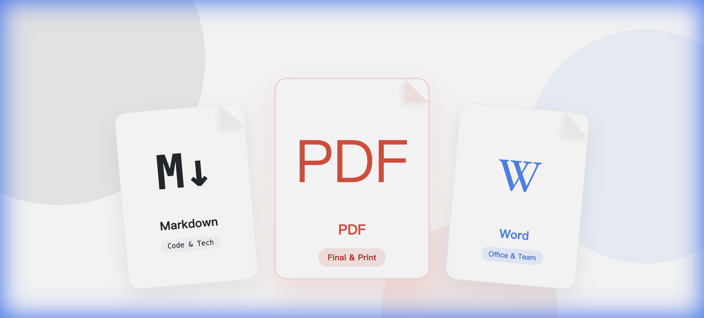

- Markdown：✅ 技术文档、个人笔记、代码说明 | ❌ 复杂排版
- Word：✅ 团队协作、通用办公、合同草稿 | ❌ 版本控制
- PDF：✅ 正式发布、打印、归档 | ❌ 编辑修改
核心原则：协作期用Word/Markdown，发布期必转PDF。
"这个文档应该用什么格式导出？"
这是我最常被问到的问题之一。技术文档应该选Markdown还是Word？给客户的方案应该用PDF还是PPT？团队协作文档用什么格式最方便？
说实话，没有完美的格式，只有最适合场景的格式。今天我们就来深入聊聊主流文档格式的选择逻辑，让你以后不再纠结。
先搞清楚：5种主流文档格式的定位
在详细对比之前，我们先建立一个整体认知。现代文档格式可以分为5大类：
📌 文档格式分类
- 纯文本类：Markdown、TXT - 轻量级，适合技术文档
- 富文本类：Word（.docx）、富文本（.rtf）- 功能丰富，适合通用场景
- 固定格式类：PDF - 格式锁定，适合正式文档
- 演示类：PPT、Keynote - 视觉化，适合展示
- 网页类：HTML、EPUB - 在线阅读，适合发布
每一类都有自己的使用场景。选错了格式，不仅降低效率，还可能影响协作。
Markdown：程序员的最爱，越来越大众化
💡 适合场景：技术文档、博客文章、项目README、个人笔记
如果你的文档需要频繁修改、版本控制，或者包含大量代码，Markdown是不二之选。
Markdown的核心优势
为什么这么多开发者喜欢Markdown？因为它解决了传统文档格式的几个痛点：
- 纯文本格式：用任何文本编辑器都能打开，不依赖特定软件
- 版本控制友好：可以用Git跟踪变更，diff对比清晰
- 语法简单：10分钟就能学会基础语法
- 专注内容：不用纠结排版，写作时更专注
- 跨平台：Windows、Mac、Linux都能用
- 易于转换：可以轻松转为HTML、PDF、Word等格式
Markdown语法速查表
给不熟悉Markdown的朋友看看，真的很简单：
# 一级标题
## 二级标题
### 三级标题
**粗体文本**
*斜体文本*
~~删除线~~
- 无序列表项1
- 无序列表项2
1. 有序列表项1
2. 有序列表项2
[链接文字](https://example.com)

`代码片段`
```python
# 代码块
def hello():
print("Hello World")
```
> 引用块是不是很直观？你只需要记住几个符号，就能写出结构清晰的文档。
Markdown的最佳使用场景
根据我的经验，这些场景用Markdown最合适：
- 技术文档：API文档、技术规范、开发手册
- 项目文档：README.md、CHANGELOG.md、贡献指南
- 个人笔记：学习笔记、工作日志、想法记录
- 博客文章：很多博客平台直接支持Markdown
- 需求文档：产品PRD、功能说明
⚠️ Markdown不适合的场景
- 复杂的表格和图表（虽然能做，但很麻烦）
- 需要精确排版的正式文档（合同、报告等）
- 与不懂技术的人协作（他们可能看不懂语法）
- 需要复杂格式的文档（如多栏排版、页眉页脚）

Markdown让你专注于内容，而非格式
推荐的Markdown工具
- 在线编辑：Typora、MarkText、Obsidian
- 代码编辑器：VS Code、Sublime Text（配插件）
- 笔记软件：Notion、印象笔记、Bear
- 在线平台：GitHub、GitBook、语雀
不管用什么格式，高效的编辑技巧都是通用的。看看如何提升你的文档编辑效率。
Word/DOCX：办公室的通用语言
💡 适合场景：通用文档、协作编辑、合同起草、报告撰写
如果你要和不同背景的人协作，Word是最保险的选择。几乎所有人都会用，兼容性最好。
Word的核心优势
- 功能强大：表格、图表、图片、批注、修订...应有尽有
- 所见即所得：编辑什么样，打印就什么样
- 普及率高：几乎所有人都会用，不存在学习成本
- 模板丰富：简历、报告、合同，各种模板都有
- 协作功能：修订追踪、批注评论很方便
Word的局限性
但Word也有明显的缺点：
- 版本控制困难：不同版本的文档难以对比
- 格式容易乱：复制粘贴后格式经常出问题
- 文件体积大：插入图片后文件会变得很大
- 兼容性问题：不同Office版本可能显示不一致
- 不适合代码：插入代码时格式难以控制
Word的最佳使用场景
- 通用办公文档：报告、总结、计划
- 需要多人协作：特别是与非技术人员协作
- 合同草稿：需要修订追踪和批注的合同
- 复杂排版：学术论文、书籍排版
- 需要打印：打印后的效果最可控
📌 实用技巧
Word文档协作时，建议：
- 开启"修订追踪"功能，保留修改历史
- 使用"比较文档"功能对比版本差异
- 定期另存为新版本，避免丢失内容
- 重要文档定期导出为PDF备份
PDF：最终版本的首选
💡 适合场景：正式文档、合同签署、归档保存、跨平台分享
PDF是"便携式文档格式"的缩写。当你需要确保文档格式不被改变时，PDF是最佳选择。
PDF的核心优势
- 格式锁定：任何设备打开都是一样的效果
- 安全性高：可以加密、限制编辑和打印
- 文件压缩：比Word文件小，便于传输
- 跨平台兼容：手机、电脑、平板都能打开
- 专业性强：适合正式场合使用
- 支持签名：可以添加电子签名
PDF的类型区别
很多人不知道，PDF其实有不同类型：
- 可搜索PDF：文字是文本层，可以复制和搜索
- 图片PDF：每一页都是图片，不能复制文字
- 可填写PDF：包含表单字段，可以填写信息
- 可编辑PDF：保留部分编辑能力的PDF
导出时要注意选择正确的类型。比如合同应该用"可搜索PDF"，方便审核；扫描件一般是"图片PDF"。
PDF的最佳使用场景
- 正式合同：需要签字盖章的文档
- 对外发布：白皮书、产品手册、宣传资料
- 归档保存：长期保存的文档
- 电子书籍：需要分发的电子书
- 简历投递：确保HR看到的格式正确
⚠️ PDF不适合的场景
- 需要频繁修改的文档（编辑PDF很麻烦）
- 多人协作编辑（PDF不支持实时协作）
- 需要复制内容的场景（图片PDF无法复制文字）

不同文档格式的转换关系
HTML：网络时代的文档格式
💡 适合场景：在线发布、知识库、帮助文档、博客文章
如果你的文档主要在网上阅读，HTML是最原生、最灵活的选择。
HTML的核心优势
- 原生网页格式：浏览器直接打开，不需要额外软件
- SEO友好：搜索引擎可以索引内容
- 交互性强：可以添加按钮、表单、动画
- 样式灵活：通过CSS可以实现任意样式
- 跨平台：所有设备都有浏览器
HTML的最佳使用场景
- 在线文档：帮助中心、用户手册
- 技术博客：文章发布到网站
- 知识库：企业wiki、团队文档
- 在线简历：个人网站、作品集
格式对比：一张表看清所有差异
为了方便你做决策，我整理了一张对比表：
| 特性 | Markdown | Word | HTML | |
|---|---|---|---|---|
| 学习成本 | 低 ⭐⭐ | 低 ⭐⭐ | 无 ⭐ | 中 ⭐⭐⭐ |
| 编辑难度 | 简单 ⭐⭐ | 简单 ⭐⭐ | 困难 ⭐⭐⭐⭐⭐ | 中等 ⭐⭐⭐ |
| 格式一致性 | 高 ⭐⭐⭐⭐⭐ | 中 ⭐⭐⭐ | 高 ⭐⭐⭐⭐⭐ | 中 ⭐⭐⭐ |
| 版本控制 | 优秀 ⭐⭐⭐⭐⭐ | 困难 ⭐⭐ | 不支持 ⭐ | 优秀 ⭐⭐⭐⭐⭐ |
| 协作能力 | 中 ⭐⭐⭐ | 强 ⭐⭐⭐⭐ | 弱 ⭐⭐ | 中 ⭐⭐⭐ |
| 文件大小 | 极小 ⭐⭐⭐⭐⭐ | 大 ⭐⭐ | 中 ⭐⭐⭐ | 小 ⭐⭐⭐⭐ |
| 跨平台性 | 完美 ⭐⭐⭐⭐⭐ | 好 ⭐⭐⭐⭐ | 完美 ⭐⭐⭐⭐⭐ | 完美 ⭐⭐⭐⭐⭐ |
| 安全性 | 低 ⭐⭐ | 中 ⭐⭐⭐ | 高 ⭐⭐⭐⭐⭐ | 低 ⭐⭐ |
选择决策树：3步确定最佳格式
还是不知道该选哪个？跟着这个决策流程走：
📌 第一步：明确文档用途
- 技术文档/代码相关 → 考虑 Markdown 或 HTML
- 通用办公文档 → 考虑 Word
- 最终发布版本 → 考虑 PDF
- 在线发布 → 考虑 HTML
📌 第二步：考虑协作需求
- 需要多人同时编辑 → Word 或 在线文档
- 需要版本控制 → Markdown
- 只读不编辑 → PDF
- 单人编写 → 任意格式
📌 第三步：评估受众技术水平
- 技术人员 → Markdown / HTML
- 普通用户 → Word / PDF
- 客户/外部人员 → PDF（最保险）
格式转换：灵活应对不同需求
💡 实用建议
我的做法是：用Markdown或Word写初稿，最后导出为PDF或HTML发布。这样既保证了编辑效率，又满足了发布需求。
常用转换工具
- Markdown → HTML/PDF：Pandoc、Typora
- Word → PDF：Word自带导出功能
- PDF → Word：Adobe Acrobat、在线转换工具
- 任意格式互转：Pandoc（命令行工具，功能最强）
批量导出的场景
如果你有大量石墨文档需要导出为不同格式，手动转换会非常耗时。这时候专业的导出工具就派上用场了。
石墨文档导出工具支持：
- ✅ 批量导出为 Markdown、PDF、Word
- ✅ 自动保留文件夹结构
- ✅ 团队空间文档一键导出
- ✅ 自定义导出格式和选项

批量导出让格式转换更轻松
最佳实践：我的文档管理方案
分享一下我个人的文档管理策略：
我的工作流程
- 起草阶段：使用石墨文档或Markdown编辑器，专注内容
- 协作阶段：如果需要他人参与，转为Word或继续用石墨
- 审核阶段：导出为PDF，发给相关人员审核
- 发布阶段：根据发布渠道选择HTML或PDF
- 归档阶段：统一转为PDF归档，同时保留源文件
文件命名建议
一套清晰的命名规则能让你事半功倍：
格式：[日期]-[项目名]-[文档类型]-[版本].扩展名
示例：
2025-01-22-产品规划-PRD-v1.0.md
2025-01-22-产品规划-PRD-v1.0.pdf
2025-01-22-产品规划-PRD-Final.pdf常见错误：这些坑不要踩
⚠️ 错误1：只保存最终格式
有人习惯只保留PDF，把Word源文件删了。结果需要修改时只能重新编辑PDF（超级麻烦）。
正确做法：源文件和最终文件都要保留。
⚠️ 错误2：格式混用
同一个项目，有的文档用Markdown，有的用Word，有的用PDF，找起来很乱。
正确做法：在项目开始前统一文档格式规范。
⚠️ 错误3：不考虑接收方
给客户发Markdown文件，对方根本打不开。或者发Word给开发，代码格式全乱了。
正确做法：根据接收方的技术水平选择格式。
总结：没有最好的格式，只有最合适的选择
看完这篇文章，你应该明白了：文档格式的选择，本质上是在不同需求之间做权衡。
📌 快速决策指南
- 技术文档、需要版本控制 → Markdown
- 通用办公、多人协作 → Word
- 正式发布、归档保存 → PDF
- 在线阅读、SEO优化 → HTML
最后分享一个小技巧：不要过度纠结格式。有时候，快速开始写作比选择完美的格式更重要。写完之后，格式是可以转换的。
另外，定期备份你的文档。无论用什么格式，都建议导出多个版本保存。云端+本地，双重保险。
💡 行动建议
- 评估你目前常用的文档类型，看看格式是否合适
- 建立团队的文档格式规范，减少混乱
- 学习一种新格式（推荐Markdown），扩展你的工具箱
- 设置定期备份提醒，养成多格式保存的习惯